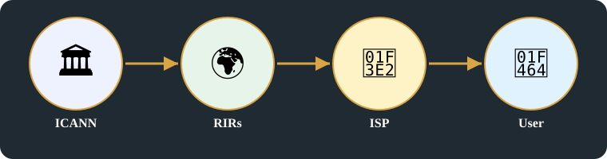

Telephone directory → DNS → ISP → User — the directory idea, kept, but run by a distributed system, not a paper book.Domain name space — DNS walks the tree from root to domain to host, like a telephone directory. Image: Wikimedia Commons, public domain.A night telephone operator, Seattle, December 1960 — the human directory before DNS: a person looked up the name and connected the call. Image: Wikimedia Commons, courtesy of the Seattle Municipal Archives.
1. From telephone book to DNS
Before DNS, the directory was a telephone book run by government: a telecom company, a business, and a person all looked up a name in a book maintained by government, and dialled the number listed there.
Government telephone directory, with options: writing up, directory management, keypad and switchboard controls, privacy lock (data and communication, MAC plus IP) — a telecom company, a business, and a person all used that directory to look up a name, dial it, and keep their communication private.
Replace the phone directory with DNS: the internet kept the idea of looking up a name, but replaced the paper book with a distributed system that networks, telecom companies, and businesses use automatically.
The internet kept the directory idea but changed who runs it and how it scales.
Names are delegated hierarchically, addresses are allocated in blocks by region, and both are wrapped in regulation and privacy rules.
ICANN: a non-profit, multi-stakeholder body that manages domain names — including company names — in a hierarchy, with country codes, area codes, top-level domains, and IP ranges, so telecom companies and networks can find each other.
RIRs:ARIN, RIPE, and APNIC allocate IP blocks by region, so networks, telecom companies, and businesses in each region get addresses that work globally.
IP as identity: an IP address identifies a network, a company, or a device on the internet, in the same way a telephone number identifies a subscriber.
DNSSEC, registration, owner, trust, key and security: a domain is registered to an owner, secured with keys, and trusted by networks and companies because its DNS records can be verified.
That is why naming and regulation belong in one card, not in separate ones.
Figure 2 — Who runs names and addresses, from the top down.
3. Regulation, standards and market rules
RIRs administer regional Internet number-resource allocation: ARIN, RIPE, and APNIC allocate IP blocks by region, so networks, telecom companies, and businesses in each region get addresses that work globally.
IETF develops Internet technical standards: the standards that let different networks and companies work together on the Internet.
IEEE develops standards across electrical, electronics and computing fields: standards that cover hardware, electronics, and computing, not only Internet protocols.
3GPP develops mobile telecommunications specifications: the specifications that mobile networks, phones, and telecom companies build to.
FCC and TRAI have national regulatory roles in their respective jurisdictions: FCC in the USA, TRAI in India — each regulates telecom companies, spectrum, and services inside its own country, not globally.
Four functions, not one hierarchy: this chapter distinguishes standards development, resource coordination, technical implementation and government regulation rather than presenting them as a single regulatory hierarchy — standards development (IETF, IEEE, 3GPP), resource coordination (RIRs, ICANN), technical implementation (vendors, DNS operators, and network engineers who build to those standards), and government regulation (FCC, TRAI), each with its own role.
FCC as telecom regulator over radio, TV, satellite, wireline, wireless, broadband and spectrum, through telecom companies to spectrum decisions.
Market rules: antitrust and net neutrality — telecom companies and networks must not block competitors or favour their own traffic over a customer’s traffic.
A regulator lane sits underneath the directory:FCC / TRAI, with standards bodies IETF / IEEE / 3GPP beside it.
Figure 3 — Regulators and standards, through telecom companies, to spectrum and services.
Summary:
The directory idea was kept, but who runs it changed: instead of a single government telephone book, a multi-stakeholder system of networks, companies, and regulators now runs the directory together.
Names are delegated hierarchically, addresses are allocated in blocks by region: a top-level name is delegated down to companies and networks, and IP blocks are allocated to regions, so a telecom company in one region can address a network in another.
Both are wrapped in regulation and privacy rules: naming and addressing are governed by telecom regulation and privacy rules, so a person, a business, and a company can trust the directory and keep their data protected.

Second illustration — ICANN → RIRs → ISP → User: who runs names and addresses, in order.
Key points
Market rules: antitrust, net neutrality, as written on the page.
Government telephone directory, with options: writing up, directory management (ICANN, RIR), keypad / switchboard controls, privacy lock (data and communication, MAC plus IP).
Replace phone directory with DNS.
ICANN: non-profit, multi-stakeholder, domain (company names), hierarchical, country codes, area codes, TLDs, IP ranges.
RIRs:ARIN, RIPE, APNIC — IP blocks allocation. IP as identity. DNSSEC, registration, owner, trust, key and security.
Telecom regulation:IETF, IEEE, and 3GPP set the standards, FCC and TRAI regulate telecom companies and spectrum, and DNS owners, top-level domains, shareholders, boards, and executives run the companies and organisations behind those names.
FCC as telecom regulator (1934 as written on the page) over radio, TV, satellite, wireline, wireless, broadband and spectrum, through telecom companies to spectrum decisions.
Key points above are the original points for this card. Original images are in the section below, untouched.
Horizontal links
Flow chart — Card B in the centre, with its links flowing out to the cards that use it.
DNS links this card to Card D, as a cross-domain link, because a name resolved by DNS must then be reached through the NIC and kernel stack that Card D explains.
FCC links this card to Card C and Card E, as a cross-domain link, because FCC rules govern the hardware in Card C and the productapproval in Card E.
TCP/IP links this card to Card D, as a successor, because the protocols named here are carried out in the stack that Card D describes.
Related topics
Hardware & Computing
Card C — Hardware supply and the NIC endpoint Hardware & ComputingExample: an Intel PRO/1000 PT dual-port NIC — a server or telecom switch plugs this card in, and that card is its endpoint on the network. Image: Wikimedia Commons, CC BY-SA 4.0 — Intel PRO/1000 PT Dual GigE.